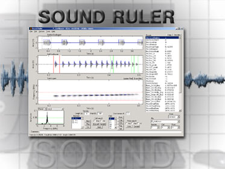

|
|
|
Introduction Guides Descriptions of variables |
 ======= OLD DOCUMENTATION ======== The
documentation for the current release is being written. The main changes between the current release 0.9.6 and the one for which this documentation was written (v 0.9.4.1) are listed below. General -
added quick and easy manual measurement of sounds. Installation -
migrated to the NSIS Installer to package the Windows binaries. Audio -
added adjustment and conversion of sampling rate to display correctly
sounds stored at modified rates, such as with time expansion or frequency
division (bat detectors). Graphing -
added color spectrograms with the capability of copying, saving and
printing the plots in color. The color scheme is user-defined. Printing - new enhanced interface, with storage of preferred settings. Screen Design -
added automated detection of screen size and removed the annoying dialog
window at startup. The user can still force a format. Settings -
added standardized settings windows that recover default values. Filters - added plot of filter profile to facilitate defining bandpass filters. Data saving and structure -
added setting of field separator for .csv files to resolve internationalization
issues with spreadsheets and databases. Code structure -
unified the code, with scheme to adjust to various platforms and versions. |
Notice: The author gives no guarantees of any kind for SoundRuler. Use it at
your own risk.
Home
| FAQ | Version Information |
Download |
License|
Registration and Contact
What is Sound Ruler | Screenshots
| Acknowledgments| For
The VeryImpatient | System Requirements |
Manual vs Automatic | How
to |
Examples | How
Sound Ruler Works | Suggested Reading | FAQ
| Settings
| Raw Measurements | Summary
Data